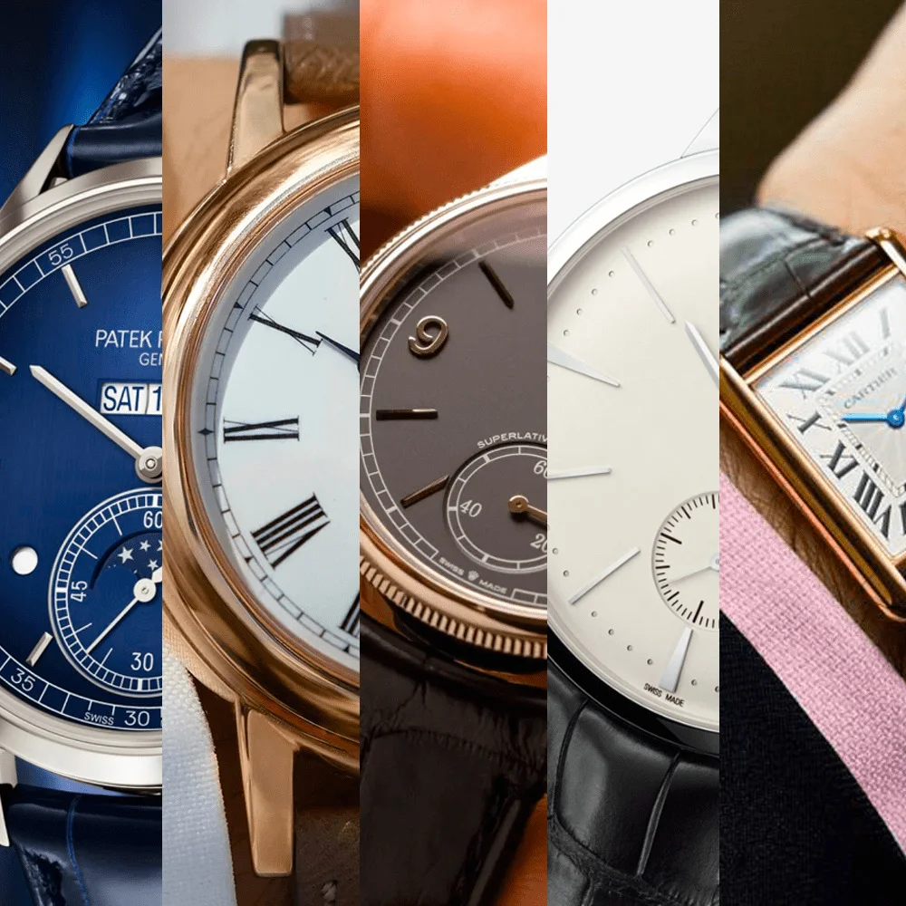

ժամագործ

օրիգինալ
ժամեր
Ներկայում՝ էլեկտրոնիկայի և հեռահաղորդակցման ուղիների զարգացման հետ՝ ճշտություն ապահովող մի քանի կանալներով բարձր դասի էլեկտրոնային ժամացույցներ են (GPS համակարգի ճշգրիտ ժամանակ, համապատասխանեցում համացանցի սերվերների ճշգրիտ ժամի հետ և այլն)։
կարդալ ավելինԱռաջներում դրանք իրենցից ներկայացնում էին մեխանիզմներ՝ առանց շարժիչի, կարգավորիչի և վայրկյանացույցի, րոպեի սլաքը ընթանում էր սինխրոն կամ քայլով շարժիչի իմպուլսից, որը ստացվում էր առաջնային ժամացույցի 24 Վոլտ լարումի բևեռացումից, իսկ ժամ ցույց տվող սլաքն ընթնում էր փոխանցող մեխանիզմով օրիգինալ ժամացույցները հնարավորություն են տալիս մարդկանց ճիշտ պահպանել այն քանի վոր օրիգինալ ժամացույցը իրենից ներկայացնում է վորակյալ մեխանիզմ, ուշ կոտրվող, ջրակայուն, մարտկոցի երկարաժամկետ պահպանություն:...
ոչ օրիգինալ
ժամեր
Համեմատվող ապրաքատեսակների ցուցակը համարվում է այն ժամացույցը վորը ունի կարճ երկարաժամկետ հմտություն ոչ օրիգինալ ժամացույցները տարբերվում են վորակյալ ժամացույցից, օրինակ ապակե շուտ կոտրվող, ոչ ջրակայուն, շուտ քրքրվող, այն հազվադեպ է լինում ժամի պահպանությունը:
կարդալ ավելինԳրպանի քրոնոմետրի որակը միջին հաշվով ցածր է սեղանի ժամացույցից։ Քրոնոմետրերը օգտագործվում են աշխարհագրական տեղանքի որոշման, փոխադրական աստղագիտական գործիքների հետ աշխատանքների, ժամանակի և ծովի երկայնության և այլ հաշվարկների ժամանակ։ Որպես ժամանակաչափ, բառի նեղ իմաստով, ծառայում է կարգավորիչը։ Ատամնանիվը, նրան ամրացված թվացուցակի սլաքները՝ կարգավորիչի կողմից ժամանակի միավորների հաշվիչն է Սովորաբար գործածվող ժամացույց բառը վերաբերում է ժամ ցույց տվող ցանկացած սարքին։....